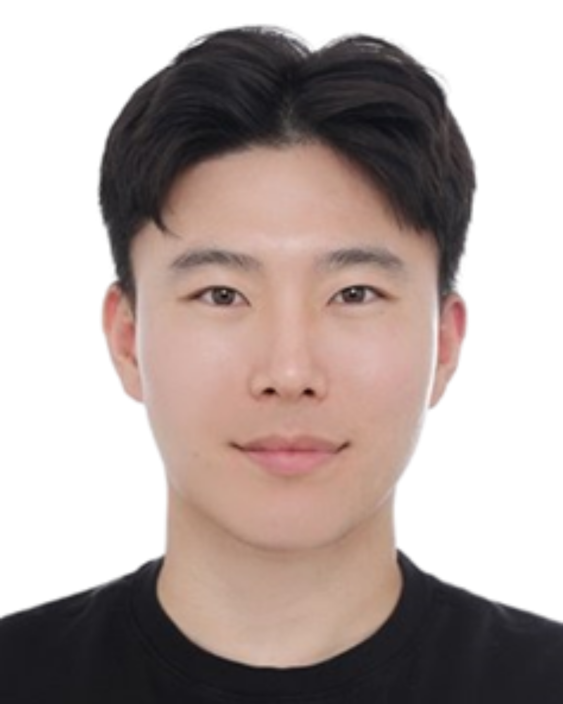
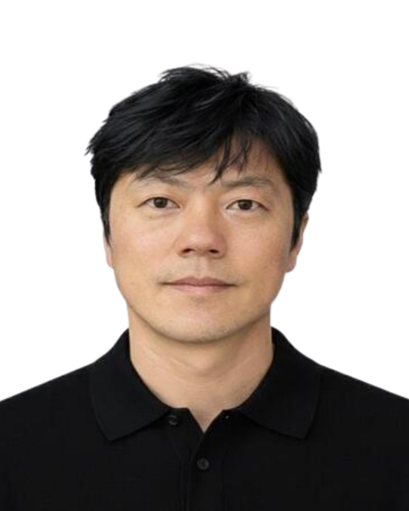

인증, 환경전략, 이머징 이슈
Add Certification, Environmental Strategy, Emerging Issues interview content here.
시스템, 제품 조사
Add System, Product Investigation interview content here.
검증
Add Verification interview content here.
제품 우수성
Add Product Excellence interview content here.
감성 품질, 설계 품질 엔지니어링 엑설런스
Add Emotional Quality, Design Quality Engineering Excellence interview content here.
AI Chief
Add AI Chief interview content here.

안녕하세요
PIPG본부의 Propulsion System Calibration담당
이재혁입니다
담당 소개 및 현재 담당하고 계신 업무에 대해 구체적으로 알려주세요.
저희 담당은 엔진/트랜스미션 캘리브레이션 경험을 바탕으로 전기차 캘리브레이션, 소프트웨어, 시뮬레이션까지 업무 영역을 확장하며, AI, 가상 기술을 활용해 차량 제어 전반과 안정적인 차량 출시를 지원하고 있습니다. 저는 전기차 업무를 담당하며, 실차와 가상 환경을 통해 전기차 시스템의 안전, 성능과 품질을 사전에 검증하고 양산 전 리스크를 최소화하고 있습니다.
하루 업무에 대해 소개해주세요.
보통 전날 밤이나 아침에 북미에서 전달된 업무 메일을 확인하며 하루를 시작합니다. 현재는 시뮬레이션 장비를 활용해 검증 업무를 수행하며, 전기차 시스템이 요구 조건에 맞게 안전하게 동작하는지 검증하고 있습니다.
담당하고 있는 업무를 위해 필요한 역량은 무엇이라고 생각하나요?
전기차 검증 업무에는 전기차 시스템에 대한 이해와 함께, 실차와 시뮬레이션을 중심으로 한 가상 검증 환경을 유기적으로 활용하는 역량이 중요하다고 생각합니다. 실차 시험은 여전히 핵심이지만, 사전에 시뮬레이션과 같은 가상 환경에서 조건을 구성해 문제를 줄여가는 접근이 점점 필수적인 요소가 되고 있습니다. 이러한 가상 검증 결과를 바탕으로 추가 시험이 필요한지, 또는 어떤 리스크를 관리해야 하는지를 판단할 수 있는 의사결정 역량 또한 중요한 요소가 되고 있다고 느끼고 있습니다.
팀 문화나 함께 일하시는 우리 팀 동료들은 어떤가요?
저희 팀은 서로에 대한 배려와 신뢰를 바탕으로 움직이는 팀이라고 생각합니다. 팀 특성상 실차 시험이 많아 차량 이슈를 자주 접하는데, 한 번 도움을 받으면 자연스럽게 서로 돕는 분위기가 형성되어 있고, 누가 시키지 않아도 다 같이 모여 문제를 해결합니다. 덕분에 저도 부담 없이 도움을 요청할 수 있는, 함께 일하기 편한 팀입니다.
앞으로의 목표 또는 커리어 방향
검증 결과에 책임을 지고, 고객 안전을 기준으로 판단할 수 있는 검증 엔지니어가 되는 것이 제 방향입니다. 단순히 통과 여부를 확인하는 데 그치지 않고, 검증 단계에서 문제를 사전에 설명하고 줄일 수 있는 역할을 목표로 하고 있습니다. 제 시험 결과가 곧 고객의 안전과 직결된다는 인식을 바탕으로, 책임감 있게 검증 업무를 수행하고 싶습니다.

안녕하세요
AVD & SVI본부의 Advanced Vehicle Development담당
김성수입니다
AVD 담당은 어떤 일을 하는 곳인가요?
AVD(Advanced Vehicle Development) 담당은 차량개발초기 Architecture와 Package(차체 구조·공간 설계)를 기반으로 고객이 체감하는 차량의 기본기를 설계·기획하고, 혁신적인 아이디어와 프로젝트를 발굴·주도하여 GMTCK 전사의 Innovation Hub 역할을 수행하는 조직입니다.
AVD 담당은 고객에게 왜 중요한가요?
고객이 실제로 경험하는 주행거리, 공간감, 승차감, 안전과 가격에 대한 신뢰 같은 "차량의 기본기와 상품성"은 모두 AVD가 설계하는 Architecture와 Package에서 출발합니다. 예를 들어, 한 번 충전(또는 주유)으로 얼마나 멀리, 얼마나 효율적으로 갈 수 있는지(Propulsion), 승객이 느껴지는 seating posture, headroom, legroom, 전체적인 spaciousness, driver visibility, 그리고 승하차 편의성까지 포함한 종합적인 실내 경험, 코너링 · 직진 안정성 · 정숙성 등 Ride Comfort와 Driving Feel의 기본 Balance, 겉으로 보이지 않는 Body Structure와 Crash Architecture가 만들어 내는 충돌 성능과 Safety에 대한 신뢰감, 같은 가격대에서 얼마나 합리적인 사양과 구성을 제공하는지, 즉 Value for Money를 얼마나 잘 충족하는지 이 모든 것들이 AVD가 세우는 Fundamental 기준과 판단에 따라 달라집니다. AVD는 차량개발초기 Vehicle Fundamentals를 설계하고, 성능·안전·공간·가격 사이의 밸런스를 조율해 고객 가치(Customer Value)와 브랜드 신뢰(Brand Trust)를 만들어 가는 팀입니다.
AVD 담당 업무를 위해 필요한 역량은 무엇이라고 생각하나요?
AVD 업무는 차량의 "큰 그림(Big Picture)"을 설계하고, "Innovation Hub"로서 여러 조직을 하나의 방향으로 연결해 고객에게 더 나은 차를 제공하는 역할을 합니다. 이를 위해 위해 AVD에서의 필요 역량은 System-Level Thinking: Architecture, package 전반을 아우르는 시야와 제약 조건 하에서 최적의 균형점을 찾는 역량, Cross-Functional Collaboration: Design, Powertrain, Electrical, Manufacturing, Safety, Interior 등과 효과적으로 소통·조율하는 긴밀한 협업 능력, Customer & Market Insight: Global Benchmarking과 데이터 분석을 통해 고객 가치와 시장 요구를 읽어내는 능력, Innovation Mindset & Learning Agility: 전동화(Electrification), SDV(Software-Defined Vehicle)와 같은 새로운 기술·아키텍처를 빠르게 이해하고, 새로운 패키징 아이디어(New Packaging Ideas)를 스스로 탐색해 시험해 보는 도전적인 태도, Innovation Leadership: 새로운 아이디어와 업무 방식을 발굴·실행해, 업무 방식을 더 Efficient & Effective 하게 만드는 추진력입니다.
AVD 담당의 매력은?
AVD 담당의 매력은 새로운 차량 개발과 전사 Innovation의 선두에서, 차량 개발의 가장 초기 단계에서 제품의 방향성과 고객 경험을 결정짓는 핵심 역할을 하면서, 다양한 조직과 협업해 폭넓은 지신과 시야를 확보 할 수 있으며, Architecture·Package를 통해 차량의 "뼈대"를 설계하는 독보적인 전문성을 쌓을 수 있습니다.
앞으로 AVD 담당이 지향하는 목표는 무엇인가요?
AVD 담당의 지향 목표는, Customer-Value-Driven Architecture Leader: 주행거리·공간·승차감·안전·가격 경쟁력 등 고객이 체감하는 기본기를 미래 고객 요구를 반영한 차세대 Vehicle Structure를 설계하는 조직, Insight & Benchmarking-Based Decision Hub: 지속적인 글로벌 벤치마킹과 신규 아이디어 발궁르 통한 프로그램별 고객 가치 극대화, Enterprise Innovation & Front-Loading Hub: 품질·원가·개발 리드타임을 동시에 개선하고, 새로운 아이디어와 업무 방식을 확산하는 GMTCK의 Innovation Hub입니다.

안녕하세요
AVD & SVI본부의 Studio & Surface Integration담당
이정원차장입니다
인터뷰 내용이 준비 중입니다.

VPD/PID 담당
입니다. "
담당 소개 및 현재 담당하고 계신 업무에 대해 구체적으로 알려주세요.
저희 담당은 차량의 주행성이나 정숙성처럼, 고객이 실제로 체감하는 성능을 통합적으로 관리하는 역할을 하고 있습니다. 차량 동력성능 개발, 소음&진동, 가상 개발팀이 긴밀하게 협업하며 시험과 해석을 하나의 흐름으로 연결하고, 그 안에서 최적의 차량 성능을 만들어가고 있습니다. 저는 그 중에서도 소음&진동 성능 개발 엔지니어로서, 불쾌한 소음과 진동을 줄이는 역할 뿐만 아니라 차량의 모델이나 브랜드 이미지에 어울리는 엔진 사운드와 전기차 모터 사운드를 만들어가는 업무를 맡고 있습니다.
담당 업무를 위해 필요한 역량은 무엇이라고 생각하나요?
이 업무에 필요한 역량은 크게 세 가지라고 생각합니다. 첫 번째는 기본기입니다. 차체, 섀시, 추진 시스템 등 차량 전반에 대한 이해를 바탕으로 소음·진동 현상을 바라볼 수 있어야 합니다. 이런 기본기가 갖춰져 있어야 보다 안정적이면서도 현실적인 해결책을 제시할 수 있다고 생각합니다. 두 번째는 데이터를 읽고 해석하는 능력입니다. 차량 성능 개발은 해석이나 물리 시험, 다양한 가상 툴을 통해 생성되는 데이터를 기반으로 의사결정이 이루어지는 경우가 많기 때문에, 데이터 속에서 의미를 정확히 읽어내는 능력이 중요합니다. 마지막으로는 커뮤니케이션과 끈기입니다. 소음·진동 성능 개발은 설계, 시험, 품질, 생산 등 여러 부서가 유기적으로 연결돼 있어 협업이 필수적인 업무입니다. 또한 소음·진동 문제는 눈에 보이지 않고 한 번에 해결되지 않는 경우가 많아, 끝까지 원인을 파고들며 해결해 나가는 끈기 역시 중요한 역량이라고 생각합니다.
진행하셨던 프로젝트 중 인상깊었던 프로젝트가 있나요?
트레일 블레이저와 트랙스 크로스오버 개발 당시, 소음진동 엔지니어로 참여했던 경험이 특히 기억에 많이 남습니다. 당시 국내외 소형 SUV 시장에서는 대부분 4기통 엔진을 사용하고 있었고, 3기통 엔진을 적용한 두 차종은 소음·진동 측면에서 태생적으로 불리한 조건을 안고 출발해야 했습니다. 그럼에도 불구하고 4기통 차량 수준의 소음·진동 성능 목표를 달성하기 위해 많은 시간과 자원, 그리고 노력이 필요했고, 관련 부서들과의 긴밀한 협업이 필수적이었습니다. 개발 초기부터 양산까지 한순간도 긴장을 늦출 수 없었던 프로젝트였습니다. 완성된 차량들이 양산 이후 국내외 시장에서 판매 성과는 물론, 품질과 상품성, 차량 가치 측면에서도 좋은 평가를 받는 모습을 보며 개인적으로 큰 보람과 자부심을 느꼈습니다. 엔지니어로서의 책임감과 성취감을 동시에 느낄 수 있었던 경험입니다.
팀 문화나 함께 일하시는 우리 팀 동료들은 어떤가요?
저희 팀은 서로 필요한 부분은 잘 챙겨주면서도, 불필요한 간섭은 거의 없는 분위기입니다. 의견을 말하는 데 부담이 없어서 직급이나 연차에 상관없이 편하게 이야기할 수 있고, 각자의 방식을 존중해주는 팀이라고 생각합니다. 점심시간에는 함께 운동을 하기도 하고, 업무 중간중간 여유가 있을 때는 육아나 재테크, 여행처럼 다양한 주제로 수다도 많이 떠는 편입니다. 한마디로, 일할 때는 자연스럽게 몰입하고 평소에는 친구처럼 편안한 팀입니다.
내게 GMTCK란?
제게 GMTCK는 첫 직장이자, 저를 꽤 그럴듯한 직장인으로 만들어준 곳입니다. 시행착오도 많았지만, 그 과정에서 일하는 법과 사람을 대하는 법을 자연스럽게 배웠습니다. MBTI로 치면 I 90% 성향의 저를, 이제는 사람들과 소통하고 의견을 나누는 데 훨씬 편한 사람으로 만들어준 곳이기도 합니다. 또 제가 좋아하는 다양한 차량을 직접 경험하고, 개발해 나가는 과정에서 새로운 도전에 재미를 느낄 수 있는, 제게는 아주 럭셔리한 놀이터 같은 공간이기도 합니다. 그래서 GMTCK는 제 삶에 큰 영향을 준, 고맙고 애정이 가는 회사입니다.